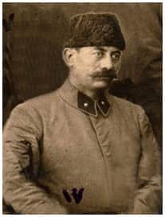
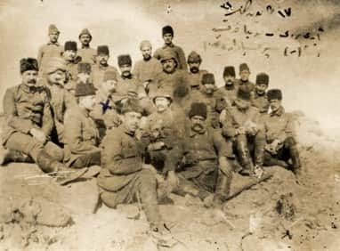
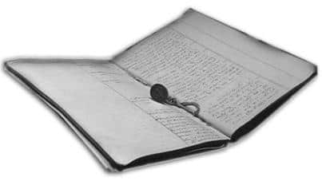
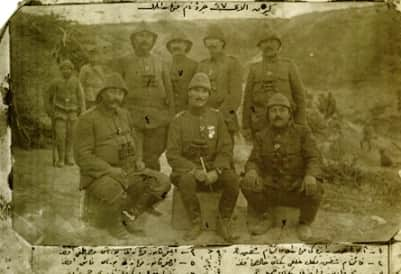
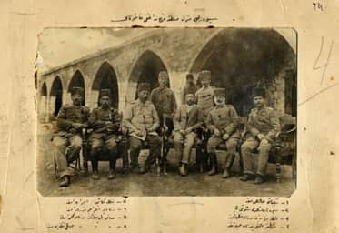

BİNBAŞI HALİS ATAKSOR

S. Serdar Halis ATAKSOR
www.ataksor.org
Binbaşı Halis Ataksor, 1876-1933 yıllarında yaşamış ve bütün ömrünü savaş meydanlarında geçirmiş kahraman bir askerdir.
1 Mart 1312 (13 Mart 1896) tarihinde Harbiye mektebine girerek, Şubat 1314 (Şubat 1899) tarihinde muvaffakiyet ile bitirmiş, önce Trablusgarp daha sonra katıldığı Balkan Harbi’nde bir gözüne isabet eden şarapnel parçası ile yaralanmış ve yine aynı harpte ayağından yaralanmıştır. Bu zor savaş yıllarını müteakip 1915 yılında sömürgeci, emperyal güçlerin Çanakkale Boğazı’nı geçip İstanbul’u işgal etme emellerinden doğan Çanakkale Muharebesi başlamıştır.
Halis Bey henüz Arıburnu cephesinde tabur komutanı olmadan önce Seddülbahir’de bölük kumandanı iken onun kumandası altındaki erlerden biri olan Gelibolu’nun Ilgadere köyünden 1299 (1883) doğumlu Halil oğlu Ahmet Uzun, Seddülbahir’de geçen olayları anlatırken şöyle diyor:
Biz iskelede mevzilenmiş iken iskeleye bir düşman torpidosu yanaştı, içinden babalarının evindeymiş gibisine 20-30 kişi çıktı, meğer düşman askerleri ara sıra buraya çıkarmış, Bölük kumandanımız Halis Efendi bize: “Buraya mevzilendiniz, vazifeniz hiç kimseyi karaya çıkartmamaktır. Eğer karaya bir tek düşman neferi çıkartırsanız, hepinizi vururum. Eğer ben de size bir hile yaparsam siz de beni vurun” dedi.
Hani yüzbaşımız çok yaman adamdı doğrusu!

Düşman Arıburnu’ndan kaçtıktan sonra Halis Bey’in 27. Alay
subaylarıyla siperler üzerinde çektirdiği fotoğraf. 30 Aralık 1915.
Diğer bir anısında ise şöyle anlatmaktadır:
Yol boyunca top ve tüfek sesleri kulaklarımıza geldi durdu. Düşman 2. Taburumuzla boğuşuyordu. Arıburnu’na gelince birden Yüzbaşımız Halis Efendi ayağından yaralandı. Atından atladı, çok kızgındı. Hepimizi yere yatırıp süngü taktırdı. Düşman sırtı tırmanmış bize doğru geliyordu. Hemen ateş açtık, hani biraz daha gecikseydik bütün sırta düşman yerleşecekti. Aramızdaki mesafe gittikçe kapanıyordu. Halis Efendi süngü hücumu verdi. “Allah! Allah!” sesleri ile sırttaki düşmana saldırdık, birbirimize girdik.
Onun gerçek bir ismi daha vardı: Kör Halis! Balkan Harbi’nde ayağından vurulduktan sonra gözüne isabet eden bir şarapnel parçasının onda bıraktığı izin ismidir bu. Cesur bir askerdi. Fakat daima cesaretini tevazu ile gizler dururdu. Tarih Konuşuyor isimli mecmuada ona dair çıkan bir küçük hatırada, hatıra sahibi kendisinden şöyle bahseder:
Top ve mermilerin göz açtırmayacak şekilde üzerimize geldiği bir sırada Halis Bey’in ayakta duruşu dikkatimi çekti, yanına yaklaşıp:
- Kumandanım niçin hedef küçültmüyorsunuz, dediğimde O, askere metanet vermek için ayakta kalışını tevazu ifade eden şu sözlerle gizlemiştir:
- Nasıl olsa kalkmayacakmıyız? Bu ağır gövde ile yatmak zor oluyor da onun için ayaktayım, cevabı ile karşılık verdi.
Gerçekten de Binbaşı Halis oldukça kilolu bir askermiş, kendi özel arşivinde görülen 1931 tarihli Esat Turgut Eczanesi’nden alınan kartında aynen şöyle yazmakta:
Boy:1.76
Kilo: 99 kilo 400 gram
Tarih: 17/12/1931Binbaşı Halis Bey’in belki de en ilginç olabilecek yönü de muharebe devam ederken tutmuş olduğu günlüktür. Halis Bey bu kıymetli ve günümüze intikal eden günlüğünü top ve bombaların arasında kaydetmiştir. Daha sonra bu kıymetli günlüğü, evladı Yılmaz Ataksor günümüz diline çevirerek Çanakkale Raporu adı altında yayınlamıştır. Bundan da öte Halis Bey’in en fazla takdire şayan olan yönü ömrü muharebe meydanlarında geçmiş olmasına rağmen, Arapça, Farsça, Fransızca ve Almanca dillerine vâkıf olmasıdır.
Çanakkale Muharebelerindeki Binbaşı Halis Bey’e dönersek; Binbaşı Halis, Çanakkale Muharebesi sırasında 27. Alay 3. Tabur komutanı olarak bulunduğu sırada 25 Nisan’da ilk çıkartma yapan düşman askerini taburunun başında karşılayan ilk askerlerdendir.

Halis beyden intikal eden Osmanlıca belgelerden bir defter.
Arıburnu Cephesi’nde tabur komutanı iken, özellikle Edirne Sırtı’nda düşmanla olan karşılaşması ve hal tarzı özellikle sayısız fedakârlıklar ve kahramanlıklarla dolu olan muharebenin içinde bir ayrı sayfayı teşkil eder, şöyle ki;
27. Alay’ın genç teğmenlerinden Mucip (Kemalyeri), Çanakkale Ruhu Nasıl Doğdu ve Azerbaycan Savaşları isimli kitabında Binbaşı Halis’in kahramanlığından övgüyle bahsetmektedir:
Muharebenin tesiri bizim taraf için de kendini göstermeye başladı. Mücadele bütün manasıyla dehşet ve ehemmiyet peyda ediyordu. Bu sırada tabur komutanımız Uşaklı Halis Bey geldi. Henüz yirmi yaşındaydım onun gelişi benim için imdat kuvveti oldu. Düşman vaziyetini tetkike başladı. Vaziyetin lehimize olduğuna dair bir kanaati olmadığını yüzünden okumak mümkündü. Bana durum muhakemesi yaptıktan ve emir verdikten sonra; “Düşman herhalde denize dökülecektir” dedi.

27 Alay birlik komutanları
Oturanlar soldan; Şefik Beyin yerine Alay Komutanı olan Binbaşı
Halis Bey, Alay Komutanı Yarbay Şefik Bey, 1. Tabur Komutanı
Binbaşı Cemil Bey
Ayaktakiler soldan; 2. Tabur Komutanı Yüzbaşı Mustafa Efendi, 3.
Tabur Komutanı Yüzbaşı Faik Efendi, Makineli Tüfek Bölüğü
Komutanı Yüzbaşı Hamdi Efendi
Gittikçe sararan yüzünden ve bakışlarından, kuvveti kaybolan gözlerinden bir mana çıkartmak istiyorum, fakat bunun için çok düşünmeye ve sebep aramaya lüzum kalmadı. Sol kolunun haki kumaşı yavaş, yavaş kızarıyor ve parmaklarının ucuna kan damlaları birikiyordu.
- Yaralanmışsınız, dedim.
- Şimdi değil sizin bölüğe gelirken yolda oldu.
- Sıhhiye çavuşu! diye bir defa seslendim. Beni susturdu ve hemen ilave etti:
- Asker yaralandığımı duymasın dedi.
Avcı hattında durumu tetkik etti. Bu tetkikin ne kadar sürdüğünü kestiremedim. Fakat komutanımın her dakika içinde yattığı yerde bile takatsizliğinin artmakta olduğunu hissettim. Bize karşı çok manalı ve müphem bakışları vardı. Anlıyorum ki yalnız bırakmak istemiyordu. Komutanımızı haddinden fazla tatmin ve temin etmeye çalıştık. Fedakâr komutanımız yavaş, yavaş müsterih olmaya ve bize emniyet etmeye başladığını hissediyordum. Biraz sonra sesi toklaştı ve şu emri verdi:

Siverek Menzil Mıntıka Kumandanlığı Hatırası
- Katiyen geri çekilmeyiniz, geriye ancak bu mevkide hepinizin öldüğünü bildirecek bir haberci gönderebilirsiniz. Size mümkün olduğu kadar takviye kuvvet göndereceğim, dedi.
Bu emri müteakip bir erin yardımıyla yavaş, yavaş geriye doğru inmeye başladı.
Çanakkale muharebesinden sonra kendisi için Milli mücadele yılları başlamış ve Fransız cephesinde mıntıka müfettişi görevini başarıyla yerine getirmiş ve daha sonra emekli olmuştur.
Bu değerli askerin vatana hizmet sevgisi emeklilik yıllarında da devam etmiş ve Uşak Belediyesi’nde mühendis olarak hizmetlerine devam etmiştir.
Belediyedeki hizmet yıllarında Uşak vilayetinin alt yapı hizmetlerinde çalışmıştır.
Bu yıllarda gece geç saatlere kadar açıkta yol ve kanalizasyon inşaatlarında çalışmış ve bundan dolayı böbrek rahatsızlığı ve zatürreeye yakalanmıştır. Askeriyenin yardımıyla İstanbul’da tedavi edilip tekrar memleketine dönmüş ve gene aynı şekilde kanalizasyon, yollar, parklar yapmaya devam etmiş ve yine hastalanmış, parasız olması nedeniyle bu kez İzmir valisinin yardımıyla tedavi ettirilmiş çok geçmeden bu kez 8 Ağustos 1933’te hayata gözlerini yummuştur.
Bir de tarih notu: Cumhuriyet döneminin ilk asfaltı Halis Bey tarafından Uşak’ta döktürülmüştür.
Çok yönlü bir kişiliğe sahip olan Halis Bey, bu kısa sayılabilecek hayatı içerisinde bize şu eserleri bırakmıştır:
1- Çanakkale Raporu (Çanakkale savaşı sırasında tuttuğu günlük)
2- Diyarbakır Tarihinde Komuk Eli (Ziya Gökalp’ın çıkardığı Küçük Mecmua’da yayınladığı makaleler)
3- La Commune de Paris - Paris Komünü (Tercüme)
4- Heredot Tarihi (Vefatıyla yarım kalmış tercüme)
Kendi arşivinden bazı önemli sayılabilecek dokümanlar ilerde kitaplaştırılmak suretiyle tarihimize kazandırılacaktır.
Torunu olarak, bu kahraman askeri burada bir kez daha rahmetle yâd ederken, anısı önünde saygıyla eğiliyor, tüm şehitlerimize Allah’tan rahmet diliyorum.